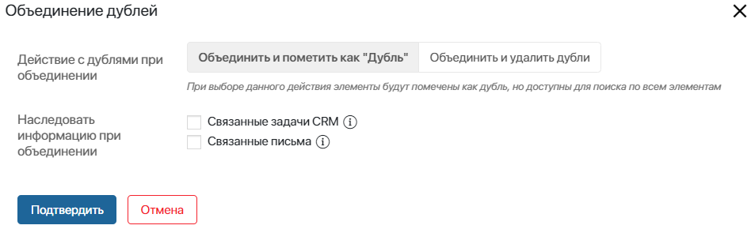

Если в результате поиска дублей в системе обнаружены похожие элементы, один из них можно отметить дублем. При этом в карточке дубля создаётся ссылка на основной элемент. Таким образом вы легко сможете определить, с каким элементом продолжать работу.
Когда вы отмечаете элемент дублем, вы можете Связать его или Объединить с другим. Опции доступны в зависимости от того, как настроено правило дублей. Если сравниваются элементы одного приложения, их можно объединить между собой. Когда сравниваемые элементы находятся в разных приложениях, их необходимо связать.
Например, вы создали сделку и работали с клиентом в ней, а затем ваш коллега добавил лид для этого клиента. Тогда вы можете отметить лид дублем и связать со сделкой, чтобы все сотрудники продолжали работу с основным элементом.
При связывании дублирующий элемент продолжит отображаться в приложении, но его название будет перечёркнуто.
Если же вы добавили две одинаковые сделки, вы можете отметить одну из них дублем и объединить со второй. В дельнейшем работа будет вестись с основным элементом.
При объединении вы можете удалить дубли из общего списка элементов приложения или оставить — в этом случае название дублирующего элемента будет перечёркнуто. Рассмотрим, как это работает, на примере приложений из раздела CRM.
Обработать дубли
Найденные в системе дубли можно обработать двумя способами:
- на странице Настройка дублей после завершения поиска одинаковых элементов;
- в карточке элемента, если на форме приложения размещён виджет Дубли объекта.
Рассмотрим подробнее оба способа.
Обработать элемент на странице «Настройка дублей»
Чтобы выполнить обработку дублей:
- Нажмите на шестерёнку рядом с названием раздела и выберите пункт Настройка дублей.
- Вверху страницы нажмите кнопку Запустить поиск, если хотите провести проверку на дубли по всем приложениям с активными правилами.
Если необходимо найти похожие элементы в одном приложении, например, выявить только дубли компаний, перейдите на вкладку Результат поиска дублей и нажмите кнопку Запустить поиск под названием приложения.
В обоих случаях найденные дубли отобразятся на вкладке Результат поиска дублей.
- Раскройте выпадающий список под названием нужного приложения. Отметьте флажком одну или несколько записей из таблицы. Затем выберите одну из появившихся кнопок для обработки дубля: Связать, Объединить, Не дубль, +Добавить элемент.

- Связать — кнопка появится, если вы сопоставляете элементы из разных приложений по одному из преднастроенных правил. Например, вам необходимо отметить лид дублем по отношению к существующей сделке. Нажав на кнопку, вы свяжете дублирующую запись с основным элементом.
Если на форме приложения размещён виджет Дубли объекта, вы сможете увидеть результат связывания на боковой панели карточки дубля;

- Объединить — кнопка появится, если вы сравниваете элементы одного приложения. Например, отмечаете дублем один лид по отношению к другому. После нажатия на неё откроется таблица сопоставления. Здесь необходимо указать поля, которые будут отображаться в карточке основного элемента.
В столбце справа показывается Результат объединения. По умолчанию при выборе одного из элементов все его поля попадают в колонку объединения. При необходимости можно отметить поля из разных элементов. Кроме того, в правой колонке вы можете задать новое название для объединённого элемента.

После настройки таблицы нажмите кнопку Объединить. В открывшемся окне задайте параметры для объединения.

- Действие с дублями при объединении — для выбора доступны следующие действия:
- Объединить и пометить как "Дубль" — дублирующий элемент останется доступным в общем списке на странице приложения, а также будет отображаться в результатах поиска. При этом название элемента будет перечёркнуто;
- Объединить и удалить дубли — дублирующий элемент удалится и не будет отображаться в приложении и результатах поиска. Чтобы найти элемент, откройте поиск по параметрам и нажмите на фильтр Удаленные.
- Наследовать информацию при объединении — отметьте, какие данные нужно передать основному объекту:
- Связанные задачи CRM — активные задачи CRM перенесутся из дублирующего элемента в основной;
- Связанные письма — письма, привязанные к дублирующему элементу, перенесутся в основной.
Нажмите кнопку Подтвердить.
Если на форме приложения размещён виджет Дубли объекта, вы сможете увидеть результат объединения на карточках сопоставляемых элементов. На боковой панели основного элемента отобразятся названия всех его дублей.

В карточке дубля будет указано, что данный элемент объединён в другой.

Обработать дубль из карточки элемента
Если на форме приложения размещён виджет Дубли объекта, вы сможете обработать дубль в карточке совпадающего элемента. Для этого:
- Перейдите в карточку элемента.
- если запись определена дублем согласно настроенному правилу, на боковой панели вы увидите сообщение об этом. Нажмите на кнопку Подробнее;

- когда в элементе не выявлено одинаковых полей согласно правилу, на боковой панели вы увидите сообщение «Совпадений не найдено». Если вы уверены, что это дубль, нажмите кнопку Отметить дублем.

- В открывшемся окне вы увидите вкладки, в которых расположены таблицы для каждого приложения, с которыми настроены правила дублей. Нажмите кнопку +Добавить элемент и выберите из списка записи, с которыми хотите сопоставить этот дубль.
- Отметьте флажком элемент, к которому хотите привязать дубль и выберите одну из появившихся кнопок: Связать, Объединить, Не дубль, Добавить элемент.

В окне Подробнее о дублях также отображаются все записи, связанные с элементом ранее. Чтобы их посмотреть, откройте выпадающий список, нажав стрелку рядом с заголовком Связанные дубли.